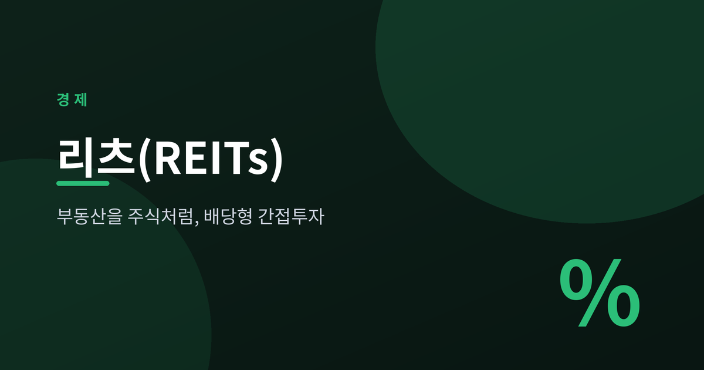
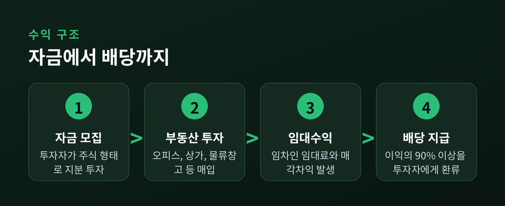
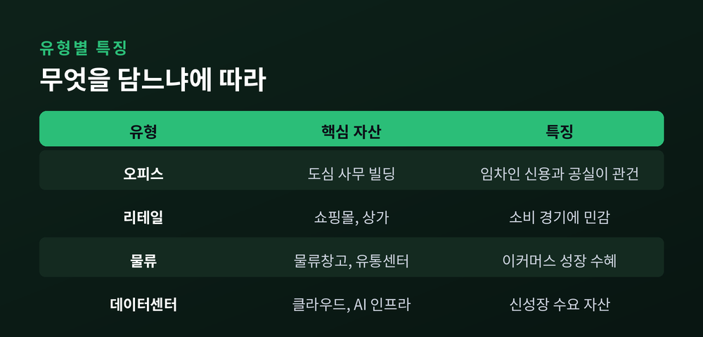
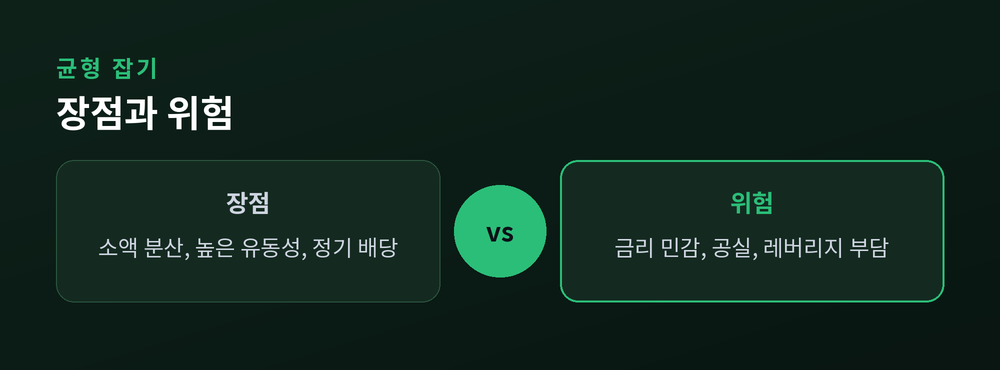

부동산을 주식처럼 담는 법
부제: 배당형 간접투자의 구조와 위험을 차분히 들여다봅니다

건물 한 채를 사는 일은 대다수에게 먼 이야기입니다. 그런데 부동산에서 나오는 임대수익을 주식 한 주 값으로 나눠 가질 수 있다면 어떨까요. 리츠(REITs)는 바로 그런 발상에서 출발한 투자 수단입니다.
리츠는 여러 투자자의 자금을 모아 부동산에 투자하고, 거기서 나온 수익을 배당으로 돌려주는 간접투자기구입니다. 오늘은 그 구조와 위험을 균형 있게 살펴보겠습니다.
리츠(Real Estate Investment Trusts)는 다수 투자자에게서 자금을 모아 오피스, 상가, 물류창고 같은 실물 부동산에 투자하는 회사입니다. 한국에서는 「부동산투자회사법」에 근거합니다.
수익의 뿌리는 임대료입니다. 리츠가 보유한 건물에서 임차인이 내는 임대료가 모이고, 여기에 자산 매각차익 등이 더해져 투자자에게 배당으로 흘러갑니다. 실물 건물을 직접 사지 않고도 부동산 수익에 참여하는 셈입니다.

리츠의 배당이 후한 이유는 제도에 있습니다. 한국에서는 배당 가능 이익의 90% 이상을 배당하면 법인세가 사실상 발생하지 않습니다. 미국 역시 과세소득의 90% 이상 배당을 자격 요건으로 두고 있습니다.
이익 대부분을 투자자에게 흘려보내는 구조이기에, 회사 단계에서 세금이 새어 나가는 몫이 적습니다. 그만큼 배당으로 돌아오는 몫이 커집니다. 국내 상장 리츠의 평균 배당수익률은 연 7% 안팎으로 알려져 있습니다.
리츠는 자산 유형에 따라 성격이 꽤 다릅니다. 오피스, 리테일, 물류, 데이터센터 등 어떤 부동산을 담느냐에 따라 수익과 위험의 결이 달라집니다.

리츠의 장점은 세 가지로 요약됩니다. 첫째, 소액으로 여러 부동산에 분산 투자할 수 있습니다. 둘째, 상장 리츠는 주식처럼 매매되어 실물보다 환금성이 높습니다. 셋째, 90% 이상 배당 구조 덕에 정기적인 배당을 기대할 수 있습니다.
다만 위험도 또렷합니다. 리츠 주가를 흔드는 가장 큰 변수는 금리입니다. 금리가 오르면 차입 이자비용이 늘고 부동산 가치가 눌려 리츠에 불리하게 작용합니다. 배당의 재원인 임대료가 공실로 줄어들 수 있고, 리츠는 차입을 활용하기에 레버리지 부담도 큽니다. 상장 리츠는 주식처럼 가격이 오르내려 손실 위험이 있으며, 해외 부동산 리츠에는 환율 위험이 더해집니다.
참고로 이 글은 정보 제공을 위한 것이며, 특정 상품의 투자 권유가 아닙니다.

2025년은 금리 하락 효과가 리츠 재무구조에 반영되기 시작한 해였습니다. CD금리가 연초 3.39%에서 연말 2.81%로 내리며 차입 부담이 점차 가벼워졌습니다. 다만 그해 KRX 리츠 지수의 상승률은 코스피의 급등에 비하면 조용한 편이었습니다.
2026년에는 상장 리츠 배당소득에 대한 저율 분리과세가 하반기 도입을 목표로 추진되고 있습니다. 제도가 자리 잡으면 투자 수요 회복에 힘을 실어줄 수 있다는 기대가 나옵니다. 통상 금리 인하 국면은 리츠에 우호적인 환경으로 읽힙니다.
리츠는 부동산의 수익을 주식의 형태로 잘게 나눠 담는 그릇입니다. 소액 분산과 배당이라는 매력 뒤에는 금리와 공실이라는 그림자가 늘 함께 있습니다.
— 배당의 크기만 보지 말고, 그 배당이 어디서 오고 무엇에 흔들리는지를 먼저 보는 편이 좋겠습니다.
건물의 문패는 바뀌어도, 임대료가 흐르는 길은 오래 지켜봐야 보입니다.